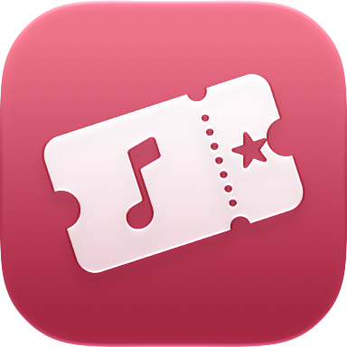

Privacy Policy
Concerts – Live Diary
Last updated: 8 October 2026
Concerts is developed by Simone Angeletti, an individual developer (“I”). This policy explains what happens to your data when you use the app on iPhone and iPad. The short version: I don't collect any of it.
What I collect
Nothing. The app has no account, no analytics, no advertising and no tracking, and it contains no third-party code. Your concerts, notes, photos and location never reach me.
Where your data is stored
- On your device. Everything you enter (concerts, setlists, notes, ratings, prices, your home city and settings) is stored inside the app on your device.
- In your iCloud. If you're signed in to iCloud, the app keeps a copy in your private iCloud database so it can sync between your devices. That data belongs to your Apple Account and is handled by Apple under the Apple Privacy Policy. I can't access it.
- Photos and videos stay in your photo library: the app only remembers which ones you picked for each concert.
Friends
Friends are optional. When you and a friend accept an invitation, the app shares data between your two Apple Accounts with iCloud sharing, without any server of mine. Your friends see the name you choose, your past and upcoming concerts with their details (date, venue, setlist, sector, seat, price, rating), but never your notes or photos, and the concerts you send them with your message. Removing a friend stops the sharing on both sides.
Permissions the app asks for
- Camera, to scan tickets. The text is read on the device with Apple's text recognition; the image isn't sent anywhere.
- Photos, to show the photos and videos you attach to a concert, to find the shots you took during a concert (on the device), and to save souvenir tickets and year in review cards.
- Location (only while you use the app), to find concerts near you. An approximate area of about 150 metres is sent to Ticketmaster through the app's server (see below). The app doesn't store your location.
- Microphone, only when you tap Recognize song. Apple's ShazamKit turns the sound into a signature on the device and only the signature is sent to Apple to find the song. Nothing is recorded or kept.
- Calendar, to add your upcoming concerts if you turn it on.
- Apple Music, for artist images, song previews and the playlists you create in your library.
- Notifications, for concert reminders and new tour dates, scheduled on the device, and for messages from your friends, delivered by iCloud.
You can turn each permission off at any time in the system settings.
Internet services
- The app's server. Requests to setlist.fm and Ticketmaster (artist names, dates, cities and, for “near me”, the approximate area) go through a small server run on Cloudflare, which adds the access keys and forwards them. It doesn't store the requests or link them to you; answers are cached for a few hours without any identifier. To accept only the genuine app, each device registers once an anonymous key created by Apple's App Attest service; the server keeps only that key, which isn't linked to you in any way. Like any web connection, Cloudflare processes your IP address to deliver the request (Cloudflare Privacy Policy). setlist.fm and Ticketmaster receive the requests from the server, not from your device.
- Ticketmaster images of events and artists are loaded directly from Ticketmaster's servers, which can see your IP address (Ticketmaster Privacy Policy).
- Apple services: Apple Music, the iTunes Search API, Apple Maps, ShazamKit and iCloud are provided by Apple under the Apple Privacy Policy.
- Spotify: songs and artists open in the Spotify app or website. The app doesn't connect to your Spotify account.
Deleting your data
You can delete any concert in the app. Deleting the app removes the data on that device. You can also remove the iCloud copy in Settings › [your name] › iCloud › Manage Account Storage › Concerts. Removing a friend stops sharing your concerts with them.
Children
The app collects no data from anyone, including children.
Changes
If this policy changes, the new version will be published on this page with a new date.
Contact
Simone Angeletti — angelettisimonedeveloper@gmail.com
Concerti – Diario live
Ultimo aggiornamento: 8 ottobre 2026
Concerti è sviluppata da Simone Angeletti, sviluppatore indipendente (“io”). Questa informativa spiega cosa succede ai tuoi dati quando usi l'app su iPhone e iPad. In breve: non ne raccolgo nessuno.
Cosa raccolgo
Niente. L'app non ha account, analisi statistiche, pubblicità o tracciamento, e non contiene codice di terze parti. I tuoi concerti, le note, le foto e la tua posizione non arrivano mai a me.
Dove sono conservati i dati
- Sul dispositivo. Tutto quello che inserisci (concerti, scalette, note, voti, prezzi, la città di casa e le impostazioni) è salvato nell'app sul tuo dispositivo.
- Nel tuo iCloud. Se hai effettuato l'accesso a iCloud, l'app tiene una copia nel tuo database iCloud privato per sincronizzare i dispositivi. Quei dati appartengono al tuo Account Apple e sono gestiti da Apple secondo l'Informativa sulla privacy di Apple. Io non posso accedervi.
- Foto e video restano nella tua libreria: l'app ricorda solo quali hai scelto per ogni concerto.
Amici
Gli Amici sono facoltativi. Quando tu e un amico accettate un invito, l'app condivide i dati tra i vostri due Account Apple con la condivisione di iCloud, senza alcun mio server. I tuoi amici vedono il nome che scegli, i tuoi concerti passati e futuri con i dettagli (data, location, scaletta, settore, posto, prezzo, voto), ma mai le note o le foto, e i concerti che invii loro con il tuo messaggio. Rimuovere un amico interrompe la condivisione da entrambe le parti.
Permessi richiesti
- Fotocamera, per scansionare i biglietti. Il testo viene letto sul dispositivo con il riconoscimento del testo di Apple; l'immagine non viene inviata da nessuna parte.
- Foto, per mostrare le foto e i video che colleghi a un concerto, trovare gli scatti fatti durante un concerto (sul dispositivo) e salvare i biglietti ricordo e le card del riepilogo dell'anno.
- Posizione (solo mentre usi l'app), per trovare concerti vicino a te. Un'area approssimativa di circa 150 metri viene inviata a Ticketmaster tramite il server dell'app (vedi sotto). L'app non salva la tua posizione.
- Microfono, solo quando tocchi Riconosci brano. ShazamKit di Apple trasforma il suono in una firma sul dispositivo e solo la firma viene inviata ad Apple per trovare il brano. Nulla viene registrato o conservato.
- Calendario, per aggiungere i concerti in programma se lo attivi.
- Apple Music, per le immagini degli artisti, le anteprime dei brani e le playlist che crei nella tua libreria.
- Notifiche, per i promemoria dei concerti e le nuove date dei tour, programmati sul dispositivo, e per i messaggi degli amici, consegnati da iCloud.
Puoi disattivare ogni permesso in qualsiasi momento nelle impostazioni di sistema.
Servizi Internet
- Il server dell'app. Le richieste a setlist.fm e Ticketmaster (nomi degli artisti, date, città e, per “vicino a me”, l'area approssimativa) passano da un piccolo server su Cloudflare, che aggiunge le chiavi di accesso e le inoltra. Non conserva le richieste e non le collega a te; le risposte restano in cache per qualche ora senza alcun identificativo. Per accettare solo l'app autentica, ogni dispositivo registra una sola volta una chiave anonima creata dal servizio App Attest di Apple; il server conserva solo quella chiave, che non è collegata a te in alcun modo. Come per ogni connessione web, Cloudflare tratta il tuo indirizzo IP per consegnare la richiesta (Informativa sulla privacy di Cloudflare). setlist.fm e Ticketmaster ricevono le richieste dal server, non dal tuo dispositivo.
- Le immagini di Ticketmaster di eventi e artisti sono caricate direttamente dai server di Ticketmaster, che possono vedere il tuo indirizzo IP (Informativa sulla privacy di Ticketmaster).
- Servizi Apple: Apple Music, l'API di ricerca iTunes, Mappe di Apple, ShazamKit e iCloud sono forniti da Apple secondo l'Informativa sulla privacy di Apple.
- Spotify: brani e artisti si aprono nell'app o nel sito di Spotify. L'app non si collega al tuo account Spotify.
Cancellare i dati
Puoi eliminare qualsiasi concerto nell'app. Eliminando l'app si cancellano i dati su quel dispositivo. Puoi rimuovere anche la copia in iCloud da Impostazioni › [il tuo nome] › iCloud › Gestisci spazio account › Concerti. Rimuovendo un amico smetti di condividere con lui i tuoi concerti.
Minori
L'app non raccoglie dati da nessuno, minori compresi.
Modifiche
Se questa informativa cambia, la nuova versione sarà pubblicata su questa pagina con una nuova data.
Contatti
Simone Angeletti — angelettisimonedeveloper@gmail.com
Concerts – Journal live
Dernière mise à jour : 8 octobre 2026
Concerts est développée par Simone Angeletti, développeur indépendant (« je »). Cette politique explique ce qu'il advient de vos données lorsque vous utilisez l'app sur iPhone et iPad. En bref : je n'en collecte aucune.
Ce que je collecte
Rien. L'app n'a ni compte, ni statistiques d'utilisation, ni publicité, ni pistage, et ne contient aucun code tiers. Vos concerts, notes, photos et votre position ne me parviennent jamais.
Où sont stockées vos données
- Sur votre appareil. Tout ce que vous saisissez (concerts, setlists, notes, notes attribuées, prix, votre ville et vos réglages) est enregistré dans l'app sur votre appareil.
- Dans votre iCloud. Si vous êtes connecté à iCloud, l'app conserve une copie dans votre base de données iCloud privée pour synchroniser vos appareils. Ces données appartiennent à votre compte Apple et sont traitées par Apple selon les Engagements d'Apple en matière de confidentialité. Je ne peux pas y accéder.
- Les photos et vidéos restent dans votre photothèque : l'app se souvient seulement de celles que vous avez choisies pour chaque concert.
Amis
Les amis sont facultatifs. Lorsque vous et un ami acceptez une invitation, l'app partage les données entre vos deux comptes Apple grâce au partage iCloud, sans aucun serveur à moi. Vos amis voient le nom que vous choisissez, vos concerts passés et à venir avec leurs détails (date, salle, setlist, secteur, place, prix, note), mais jamais vos notes personnelles ni vos photos, ainsi que les concerts que vous leur envoyez avec votre message. Retirer un ami arrête le partage des deux côtés.
Autorisations demandées
- Appareil photo, pour scanner les billets. Le texte est lu sur l'appareil avec la reconnaissance de texte d'Apple ; l'image n'est envoyée nulle part.
- Photos, pour afficher les photos et vidéos associées à un concert, retrouver celles prises pendant un concert (sur l'appareil) et enregistrer les billets souvenirs et les cartes du bilan de l'année.
- Position (uniquement pendant l'utilisation), pour trouver des concerts près de vous. Une zone approximative d'environ 150 mètres est envoyée à Ticketmaster via le serveur de l'app (voir ci-dessous). L'app n'enregistre pas votre position.
- Micro, uniquement lorsque vous touchez Reconnaître un morceau. ShazamKit d'Apple transforme le son en signature sur l'appareil et seule la signature est envoyée à Apple pour trouver le morceau. Rien n'est enregistré ni conservé.
- Calendrier, pour ajouter vos concerts à venir si vous l'activez.
- Apple Music, pour les images des artistes, les extraits et les playlists que vous créez dans votre bibliothèque.
- Notifications, pour les rappels de concerts et les nouvelles dates de tournée, programmés sur l'appareil, et pour les messages de vos amis, transmis par iCloud.
Vous pouvez désactiver chaque autorisation à tout moment dans les réglages du système.
Services Internet
- Le serveur de l'app. Les requêtes vers setlist.fm et Ticketmaster (noms d'artistes, dates, villes et, pour « près de moi », la zone approximative) passent par un petit serveur hébergé chez Cloudflare, qui ajoute les clés d'accès et les transmet. Il ne conserve pas les requêtes et ne les relie pas à vous ; les réponses sont mises en cache quelques heures sans aucun identifiant. Pour n'accepter que l'app authentique, chaque appareil enregistre une seule fois une clé anonyme créée par le service App Attest d'Apple ; le serveur ne garde que cette clé, qui n'est liée à vous d'aucune façon. Comme pour toute connexion web, Cloudflare traite votre adresse IP pour acheminer la requête (Politique de confidentialité de Cloudflare). setlist.fm et Ticketmaster reçoivent les requêtes du serveur, pas de votre appareil.
- Les images Ticketmaster des événements et artistes sont chargées directement depuis les serveurs de Ticketmaster, qui peuvent voir votre adresse IP (Politique de confidentialité de Ticketmaster).
- Services Apple : Apple Music, l'API de recherche iTunes, Plans, ShazamKit et iCloud sont fournis par Apple selon les Engagements d'Apple en matière de confidentialité.
- Spotify : les morceaux et artistes s'ouvrent dans l'app ou sur le site de Spotify. L'app ne se connecte pas à votre compte Spotify.
Supprimer vos données
Vous pouvez supprimer n'importe quel concert dans l'app. Supprimer l'app efface les données sur cet appareil. Vous pouvez aussi supprimer la copie iCloud dans Réglages › [votre nom] › iCloud › Gérer le stockage du compte › Concerts. Retirer un ami arrête le partage de vos concerts avec lui.
Enfants
L'app ne collecte de données auprès de personne, enfants compris.
Modifications
Si cette politique change, la nouvelle version sera publiée sur cette page avec une nouvelle date.
Contact
Simone Angeletti — angelettisimonedeveloper@gmail.com
Conciertos – Diario en vivo
Última actualización: 8 de octubre de 2026
Conciertos está desarrollada por Simone Angeletti, desarrollador independiente («yo»). Esta política explica qué ocurre con tus datos cuando usas la app en iPhone y iPad. En resumen: no recopilo ninguno.
Qué recopilo
Nada. La app no tiene cuentas, analíticas, publicidad ni seguimiento, y no contiene código de terceros. Tus conciertos, notas, fotos y tu ubicación nunca me llegan.
Dónde se guardan tus datos
- En tu dispositivo. Todo lo que introduces (conciertos, setlists, notas, valoraciones, precios, tu ciudad y los ajustes) se guarda en la app en tu dispositivo.
- En tu iCloud. Si has iniciado sesión en iCloud, la app guarda una copia en tu base de datos privada de iCloud para sincronizar tus dispositivos. Esos datos pertenecen a tu cuenta de Apple y los gestiona Apple según la Política de privacidad de Apple. Yo no puedo acceder a ellos.
- Las fotos y vídeos se quedan en tu fototeca: la app solo recuerda cuáles elegiste para cada concierto.
Amigos
Los amigos son opcionales. Cuando tú y un amigo aceptáis una invitación, la app comparte los datos entre vuestras dos cuentas de Apple con la función de compartir de iCloud, sin ningún servidor mío. Tus amigos ven el nombre que eliges, tus conciertos pasados y futuros con sus detalles (fecha, recinto, setlist, sector, asiento, precio, valoración), pero nunca tus notas ni tus fotos, y los conciertos que les envías con tu mensaje. Eliminar a un amigo detiene la compartición en ambos sentidos.
Permisos que pide la app
- Cámara, para escanear entradas. El texto se lee en el dispositivo con el reconocimiento de texto de Apple; la imagen no se envía a ningún sitio.
- Fotos, para mostrar las fotos y vídeos que vinculas a un concierto, encontrar las que hiciste durante un concierto (en el dispositivo) y guardar las entradas de recuerdo y las tarjetas del resumen del año.
- Ubicación (solo mientras usas la app), para encontrar conciertos cerca de ti. Se envía a Ticketmaster una zona aproximada de unos 150 metros a través del servidor de la app (ver abajo). La app no guarda tu ubicación.
- Micrófono, solo cuando tocas Reconocer canción. ShazamKit de Apple convierte el sonido en una firma en el dispositivo y solo la firma se envía a Apple para encontrar la canción. No se graba ni se guarda nada.
- Calendario, para añadir tus próximos conciertos si lo activas.
- Apple Music, para las imágenes de los artistas, los fragmentos de canciones y las playlists que creas en tu biblioteca.
- Notificaciones, para los recordatorios de conciertos y las nuevas fechas de gira, programados en el dispositivo, y para los mensajes de tus amigos, entregados por iCloud.
Puedes desactivar cada permiso en cualquier momento en los ajustes del sistema.
Servicios de Internet
- El servidor de la app. Las solicitudes a setlist.fm y Ticketmaster (nombres de artistas, fechas, ciudades y, para «cerca de mí», la zona aproximada) pasan por un pequeño servidor en Cloudflare, que añade las claves de acceso y las reenvía. No guarda las solicitudes ni las vincula contigo; las respuestas se guardan en caché unas horas sin ningún identificador. Para aceptar solo la app auténtica, cada dispositivo registra una sola vez una clave anónima creada por el servicio App Attest de Apple; el servidor solo guarda esa clave, que no está vinculada contigo de ninguna forma. Como en cualquier conexión web, Cloudflare trata tu dirección IP para entregar la solicitud (Política de privacidad de Cloudflare). setlist.fm y Ticketmaster reciben las solicitudes del servidor, no de tu dispositivo.
- Las imágenes de Ticketmaster de eventos y artistas se cargan directamente desde los servidores de Ticketmaster, que pueden ver tu dirección IP (Política de privacidad de Ticketmaster).
- Servicios de Apple: Apple Music, la API de búsqueda de iTunes, Mapas de Apple, ShazamKit e iCloud los proporciona Apple según la Política de privacidad de Apple.
- Spotify: las canciones y artistas se abren en la app o la web de Spotify. La app no se conecta a tu cuenta de Spotify.
Eliminar tus datos
Puedes eliminar cualquier concierto en la app. Al eliminar la app se borran los datos de ese dispositivo. También puedes eliminar la copia de iCloud en Ajustes › [tu nombre] › iCloud › Gestionar almacenamiento de la cuenta › Conciertos. Al eliminar a un amigo dejas de compartir tus conciertos con él.
Menores
La app no recopila datos de nadie, incluidos los menores.
Cambios
Si esta política cambia, la nueva versión se publicará en esta página con una nueva fecha.
Contacto
Simone Angeletti — angelettisimonedeveloper@gmail.com
Konzerte – Live-Tagebuch
Zuletzt aktualisiert: 8. Oktober 2026
Konzerte wird von Simone Angeletti entwickelt, einem unabhängigen Entwickler („ich“). Diese Erklärung beschreibt, was mit deinen Daten passiert, wenn du die App auf iPhone und iPad nutzt. Kurz gesagt: Ich erhebe keine.
Was ich erhebe
Nichts. Die App hat kein Konto, keine Analyse, keine Werbung und kein Tracking und enthält keinen Code von Drittanbietern. Deine Konzerte, Notizen, Fotos und dein Standort erreichen mich nie.
Wo deine Daten gespeichert werden
- Auf deinem Gerät. Alles, was du eingibst (Konzerte, Setlists, Notizen, Bewertungen, Preise, deine Heimatstadt und Einstellungen), wird in der App auf deinem Gerät gespeichert.
- In deinem iCloud. Wenn du bei iCloud angemeldet bist, speichert die App eine Kopie in deiner privaten iCloud‑Datenbank, um deine Geräte zu synchronisieren. Diese Daten gehören zu deinem Apple Account und werden von Apple gemäß der Datenschutzrichtlinie von Apple verarbeitet. Ich habe keinen Zugriff darauf.
- Fotos und Videos bleiben in deiner Mediathek: Die App merkt sich nur, welche du für jedes Konzert ausgewählt hast.
Freunde
Freunde sind optional. Wenn du und ein Freund eine Einladung annehmt, teilt die App die Daten zwischen euren beiden Apple Accounts über die iCloud‑Freigabe, ohne einen Server von mir. Deine Freunde sehen den Namen, den du wählst, deine vergangenen und kommenden Konzerte mit ihren Details (Datum, Location, Setlist, Bereich, Platz, Preis, Bewertung), aber nie deine Notizen oder Fotos, sowie die Konzerte, die du ihnen mit deiner Nachricht schickst. Wenn du einen Freund entfernst, endet die Freigabe auf beiden Seiten.
Berechtigungen der App
- Kamera, um Tickets zu scannen. Der Text wird auf dem Gerät mit der Texterkennung von Apple gelesen; das Bild wird nirgendwohin gesendet.
- Fotos, um die Fotos und Videos eines Konzerts anzuzeigen, die Aufnahmen während eines Konzerts zu finden (auf dem Gerät) und Erinnerungstickets sowie Jahresrückblick‑Karten zu speichern.
- Standort (nur während der Nutzung), um Konzerte in deiner Nähe zu finden. Ein ungefährer Bereich von etwa 150 Metern wird über den Server der App an Ticketmaster gesendet (siehe unten). Die App speichert deinen Standort nicht.
- Mikrofon, nur wenn du auf Song erkennen tippst. ShazamKit von Apple wandelt den Ton auf dem Gerät in eine Signatur um, und nur die Signatur wird an Apple gesendet, um den Song zu finden. Nichts wird aufgenommen oder gespeichert.
- Kalender, um deine kommenden Konzerte einzutragen, wenn du es aktivierst.
- Apple Music, für Künstlerbilder, Song‑Vorschauen und die Playlists, die du in deiner Mediathek erstellst.
- Mitteilungen, für Konzert‑Erinnerungen und neue Tourdaten, auf dem Gerät geplant, und für Nachrichten deiner Freunde, die iCloud zustellt.
Du kannst jede Berechtigung jederzeit in den Systemeinstellungen deaktivieren.
Internetdienste
- Der Server der App. Anfragen an setlist.fm und Ticketmaster (Künstlernamen, Daten, Städte und für „In meiner Nähe“ der ungefähre Bereich) laufen über einen kleinen Server bei Cloudflare, der die Zugangsschlüssel hinzufügt und sie weiterleitet. Er speichert die Anfragen nicht und verknüpft sie nicht mit dir; Antworten werden einige Stunden ohne jede Kennung zwischengespeichert. Damit nur die echte App Zugriff hat, registriert jedes Gerät einmalig einen anonymen Schlüssel, den der App Attest‑Dienst von Apple erzeugt; der Server speichert nur diesen Schlüssel, der in keiner Weise mit dir verknüpft ist. Wie bei jeder Webverbindung verarbeitet Cloudflare deine IP‑Adresse, um die Anfrage zuzustellen (Datenschutzrichtlinie von Cloudflare). setlist.fm und Ticketmaster erhalten die Anfragen vom Server, nicht von deinem Gerät.
- Ticketmaster‑Bilder von Events und Künstlern werden direkt von den Servern von Ticketmaster geladen, die deine IP‑Adresse sehen können (Datenschutzrichtlinie von Ticketmaster).
- Apple‑Dienste: Apple Music, die iTunes Search API, Apple Karten, ShazamKit und iCloud werden von Apple gemäß der Datenschutzrichtlinie von Apple bereitgestellt.
- Spotify: Songs und Künstler öffnen sich in der Spotify‑App oder auf der Website. Die App verbindet sich nicht mit deinem Spotify‑Konto.
Deine Daten löschen
Du kannst jedes Konzert in der App löschen. Wenn du die App löschst, werden die Daten auf diesem Gerät entfernt. Die iCloud‑Kopie kannst du unter Einstellungen › [dein Name] › iCloud › Accountspeicher verwalten › Konzerte löschen. Wenn du einen Freund entfernst, teilst du deine Konzerte nicht mehr mit ihm.
Kinder
Die App erhebt von niemandem Daten, auch nicht von Kindern.
Änderungen
Wenn sich diese Erklärung ändert, wird die neue Version auf dieser Seite mit neuem Datum veröffentlicht.
Kontakt
Simone Angeletti — angelettisimonedeveloper@gmail.com